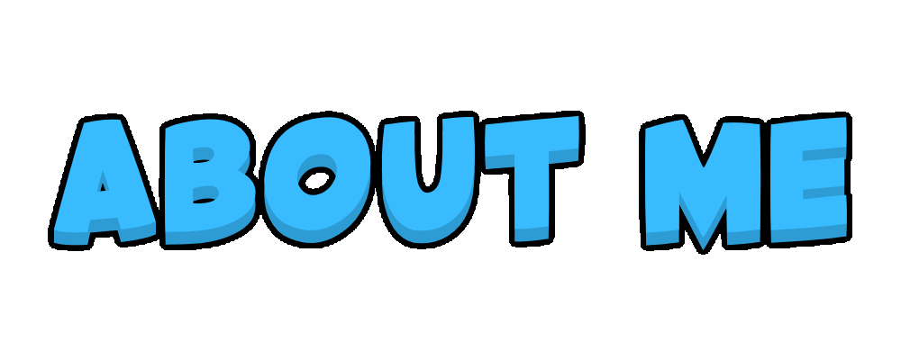

I am a 14 year old coming from Cicero Illinois, In my free time I like to play Video Games or be out with friends. Some of my hobbies/sports that I do are TaeKwonDo, Boxing, Soccer, Basketball, Swimming,etc. I was born on September 29, 2006, I have 2 sisters and me being the only boy of my siblings, I have a dog named Maya. My dream has always been to create my own video game or atleast help in building a video game, thats why I am taking the computer science course at Midtown. Ive been at Midtown since 3rd entering to 4th, I believe and ever since i have been coming to the Midtown Program. When I was little I thought that if i learned to code it would be easy to hack people...but now i know thats not right.